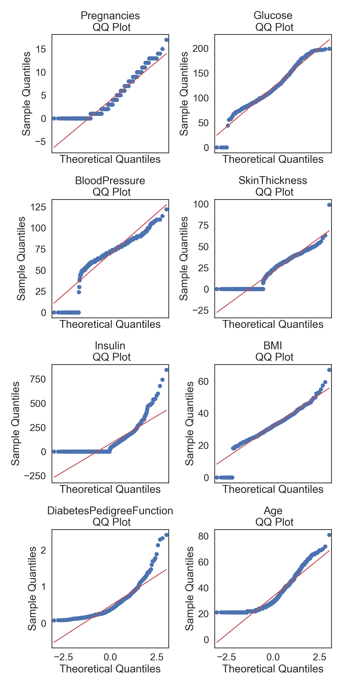
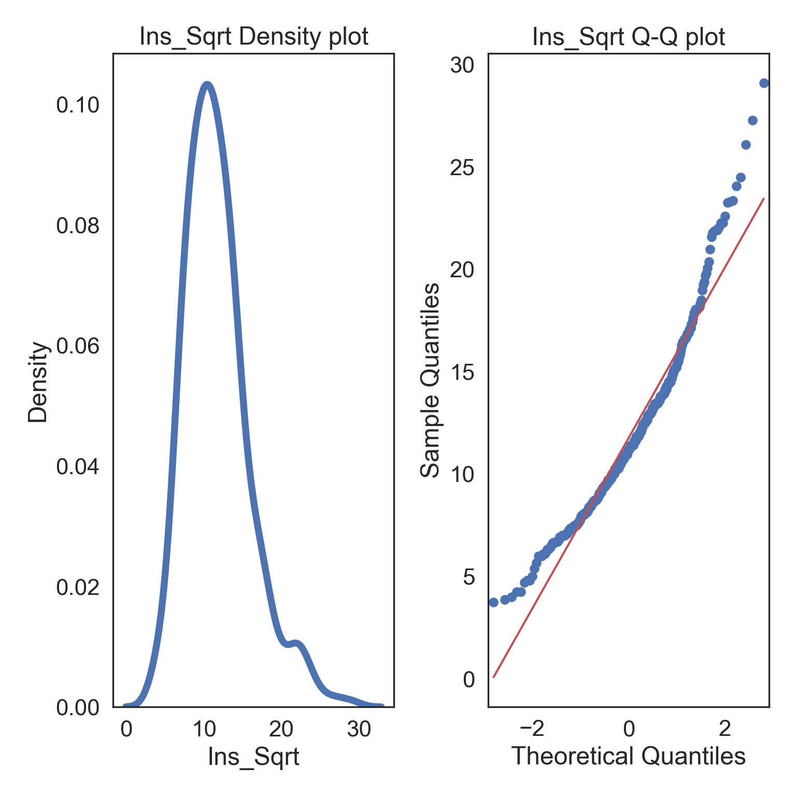
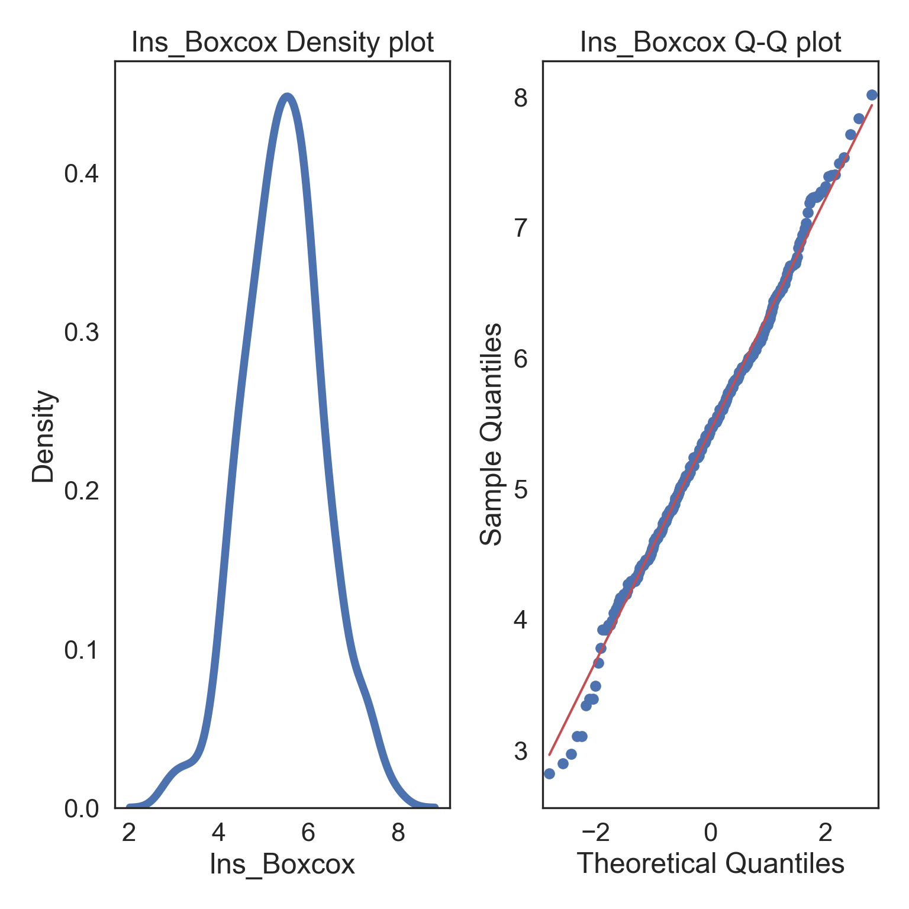

# Import all required libraries
# Data analysis and manipulation
import pandas as pd
# Working with arrays
import numpy as np
# Statistical visualization
import seaborn as sns
# Matlab plotting for Python
import matplotlib.pyplot as plt
# Data analysis
import statistics as stat
# Predictive data analysis: process data
from sklearn import preprocessing as pproc
import scipy.stats as stats
# Visualizing missing values
import missingno as msno
# Statistical modeling
import statsmodels.api as sm
# Increase font size of all seaborn plot elements
sns.set(font_scale = 1.5, rc = {'figure.figsize':(8, 8)})
# Change theme to "white"
sns.set_style("white")Exploratory Data Analysis in Python - Transforming like a Data… Transformer
Purpose of Workshop
Using data transformation to correct non-normality in numerical data
Objectives
- Load and explore a data set with publication quality tables
- Quickly diagnose non-normality in data
- Data transformation
Required Setup
We first need to prepare our environment with the necessary libraries
Load and Examine a Data Set
- Load data and view
- Examine columns and data types
- Examine data normality
- Describe properties of data
# Read csv
data = pd.read_csv("data/diabetes.csv")
# Create Age_group from the age column
def Age_group_data(data):
if data.Age >= 21 and data.Age <= 30: return "Young"
elif data.Age > 30 and data.Age <= 50: return "Middle"
else: return "Elderly"
# Apply the function to data
data['Age_group'] = data.apply(Age_group_data, axis = 1)
# What does the data look like
data.head() Pregnancies Glucose BloodPressure ... Age Outcome Age_group
0 6 148 72 ... 50 1 Middle
1 1 85 66 ... 31 0 Middle
2 8 183 64 ... 32 1 Middle
3 1 89 66 ... 21 0 Young
4 0 137 40 ... 33 1 Middle
[5 rows x 10 columns]Data Normality
Normal distributions (bell curves) are a common data assumptions for many hypothesis testing statistics, in particular parametric statistics. Deviations from normality can either strongly skew the results or reduce the power to detect a significant statistical difference.
Here are the distribution properties to know and consider:
The mean, median, and mode are the same value.
Distribution symmetry at the mean.
Normal distributions can be described by the mean and standard deviation.
Here’s an example using the Glucose column in our dataset

Describing Properties of our Data (Refined)
Skewness
The symmetry of the distribution
See Section 3.3 for more information about these values
# Make a copy of the data
dataCopy = data.copy()
# Select only numerical columns
dataRed = dataCopy.select_dtypes(include = np.number)
# List of numerical columns
dataRedColsList = dataRed.columns[...]
# For all values in the numerical column list from above
for i_col in dataRedColsList:
# List of the values in i_col
dataRed_i = dataRed.loc[:,i_col]
# Skewness
skewness = round((dataRed_i.skew()), 3)
# Kurtosis
kurtosis = round((dataRed_i.kurt()), 3)
# Print a blank row
print('')
# Print the column name
print(i_col)
# Print skewness and kurtosis
print('skewness =', skewness, 'kurtosis =', kurtosis)
Pregnancies
skewness = 0.902 kurtosis = 0.159
Glucose
skewness = 0.174 kurtosis = 0.641
BloodPressure
skewness = -1.844 kurtosis = 5.18
SkinThickness
skewness = 0.109 kurtosis = -0.52
Insulin
skewness = 2.272 kurtosis = 7.214
BMI
skewness = -0.429 kurtosis = 3.29
DiabetesPedigreeFunction
skewness = 1.92 kurtosis = 5.595
Age
skewness = 1.13 kurtosis = 0.643
Outcome
skewness = 0.635 kurtosis = -1.601skewness: skewnesskurtosis: kurtosis
Testing Normality (Accelerated)
Q-Q plots
Testing overall normality of numerical columns
Testing normality of groups
Note that you can also run Shapiro-Wilk tests (see -Section 8), but since this test is not viable at N < 20, I recommend just skipping to Q-Q plots.
Q-Q Plots
Plots of the quartiles of a target data set and plot it against predicted quartiles from a normal distribution (see -Section 8.2 for density and Q-Q plots)
# Make a copy of the data
dataCopy = data.copy()
# Remove NAs
dataCopyFin = dataCopy.dropna()
# Drop Outcome, binary columns are never normally distributed
dataCopyFin1 = dataCopyFin.drop('Outcome', axis = "columns")
# Select only numerical columns
dataRed = dataCopyFin1.select_dtypes(include = np.number)
# Combine multiple plots, the number of columns and rows is derived from the number of numerical columns from above.
fig, axes = plt.subplots(ncols = 2, nrows = 4, sharex = True, figsize = (2 * 4, 4 * 4))
# Generate figures for all numerical grouped data subsets
for k, ax in zip(dataRed.columns, np.ravel(axes)):
sm.qqplot(dataRed[k], line = 's', ax = ax)
ax.set_title(f'{k}\n QQ Plot')
plt.tight_layout()
plt.show()
Normality within Groups
Looking within Age_group at the subgroup normality
Q-Q Plots
# Make a copy of the data
dataCopy = data.copy()
# Remove NAs
dataCopyFin = dataCopy.dropna()
# Create a new column named in x, which is filled with the dataset rownames
dataCopyFin.index.name = 'Index'
# Reset the rownames index (not a column)
dataCopyFin.reset_index(inplace = True)
# Pivot the data from long-to-wide with pivot, using Date as the index, so that a column is created for each Group and numerical column subset
dataPivot = dataCopyFin.pivot(index = 'Index', columns = 'Age_group', values = ['Insulin', 'Glucose', 'SkinThickness', 'BloodPressure'])
# Select only numerical columns
dataRed = dataPivot.select_dtypes(include = np.number)
# Combine multiple plots, the number of columns and rows is derived from the number of numerical columns from above.
fig, axes = plt.subplots(ncols = 2, nrows = 6, sharex = True, figsize = (2 * 4, 6 * 4))
# Generate figures for all numerical grouped data subsets
for k, ax in zip(dataRed.columns, np.ravel(axes)):
sm.qqplot(dataRed[k], line = 's', ax = ax)
ax.set_title(f'{k}\n QQ Plot')
plt.tight_layout()
plt.show()
Transforming Data
Your data could be more easily interpreted with a transformation, since not all relationships in nature follow a linear relationship - i.e., many biological phenomena follow a power law (or logarithmic curve), where they do not scale linearly.
We will try to transform the Insulin column with through several approaches and discuss the pros and cons of each. First however, we will remove 0 values, because Insulin values are impossible…
# Filter insulin greater than 0
Ins = data[data.Insulin > 0]
# Select only Insulin
InsMod = Ins.filter(["Insulin"], axis = "columns")Square-root, Cube-root, and Logarithmic Transformations
Resolving Skewness using the following data transformations:
Square-root transformation. \(\sqrt x\) (moderate skew)
Log transformation. \(log(x)\) (greater skew)
Log + constant transformation. \(log(x + 1)\). Used for values that contain 0.
Inverse transformation. \(1/x\) (severe skew)
Squared transformation. \(x^2\)
Cubed transformation. \(x^3\)
We will compare sqrt, log+1, and 1/x (inverse) transformations. Note that you would have to add a constant to use the log transformation, so it is easier to use the log+1 instead. You however need to add a constant to both the sqrt and 1/x transformations because they don’t include zeros and will otherwise skew the results.
Square-root Transformation
# Square-root transform the data in a new column
InsMod['Ins_Sqrt'] = np.sqrt(InsMod['Insulin'])
# Specify desired column
col = InsMod.Insulin
# Specify desired column
i_col = InsMod.Ins_Sqrt
# ORIGINAL
# Subplots
fig, (ax1, ax2) = plt.subplots(ncols = 2, nrows = 1)
# Density plot
sns.kdeplot(col, linewidth = 5, ax = ax1)
ax1.set_title('Insulin Density plot')
# Q-Q plot
sm.qqplot(col, line='s', ax = ax2)
ax2.set_title('Insulin Q-Q plot')
plt.tight_layout()
plt.show()
# TRANSFORMED
# Subplots
fig, (ax1, ax2) = plt.subplots(ncols = 2, nrows = 1)
# Density plot
sns.kdeplot(i_col, linewidth = 5, ax = ax1)
ax1.set_title('Ins_Sqrt Density plot')
# Q-Q plot
sm.qqplot(i_col, line='s', ax = ax2)
ax2.set_title('Ins_Sqrt Q-Q plot')
plt.tight_layout()
plt.show()
Logarithmic (+1) Transformation
# Logarithmic transform the data in a new column
InsMod['Ins_Log'] = np.log(InsMod['Insulin'] + 1)
# Specify desired column
col = InsMod.Insulin
# Specify desired column
i_col = InsMod.Ins_Log
# ORIGINAL
# Subplots
fig, (ax1, ax2) = plt.subplots(ncols = 2, nrows = 1)
# Density plot
sns.kdeplot(col, linewidth = 5, ax = ax1)
ax1.set_title('Insulin Density plot')
# Q-Q plot
sm.qqplot(col, line='s', ax = ax2)
ax2.set_title('Insulin Q-Q plot')
plt.tight_layout()
plt.show()
# TRANSFORMED
# Subplots
fig, (ax1, ax2) = plt.subplots(ncols = 2, nrows = 1)
# Density plot
sns.kdeplot(i_col, linewidth = 5, ax = ax1)
ax1.set_title('Ins_Log Density plot')
# Q-Q plot
sm.qqplot(i_col, line='s', ax = ax2)
ax2.set_title('Ins_Log Q-Q plot')
plt.tight_layout()
plt.show()
Inverse Transformation
# Inverse transform the data in a new column
InsMod['Ins_Inv'] = 1/InsMod.Insulin
# Specify desired column
col = InsMod.Insulin
# Specify desired column
i_col = InsMod.Ins_Inv
# ORIGINAL
# Subplots
fig, (ax1, ax2) = plt.subplots(ncols = 2, nrows = 1)
# Density plot
sns.kdeplot(col, linewidth = 5, ax = ax1)
ax1.set_title('Insulin Density plot')
# Q-Q plot
sm.qqplot(col, line='s', ax = ax2)
ax2.set_title('Insulin Q-Q plot')
plt.tight_layout()
plt.show()
# TRANSFORMED
# Subplots
fig, (ax1, ax2) = plt.subplots(ncols = 2, nrows = 1)
# Density plot
sns.kdeplot(i_col, linewidth = 5, ax = ax1)
ax1.set_title('Ins_Inv Density plot')
# Q-Q plot
sm.qqplot(i_col, line='s', ax = ax2)
ax2.set_title('Ins_Inv Q-Q plot')
plt.tight_layout()
plt.show()
Box-cox Transformation
There are several transformations, each with it’s own “criteria”, and they don’t always fix extremely skewed data. Instead, you can just choose the Box-Cox transformation which searches for the the best lambda value that maximizes the log-likelihood (basically, what power transformation is best). The benefit is that you should have normally distributed data after, but the power relationship might be pretty abstract (i.e., what would a transformation of x^0.12 be interpreted as in your system?..)
# Box-cox transform the data in a new column
InsMod['Ins_Boxcox'], parameters = stats.boxcox(InsMod['Insulin'])
# Specify desired column
col = InsMod.Insulin
# Specify desired column
i_col = InsMod.Ins_Boxcox
# ORIGINAL
# Subplots
fig, (ax1, ax2) = plt.subplots(ncols = 2, nrows = 1)
# Density plot
sns.kdeplot(col, linewidth = 5, ax = ax1)
ax1.set_title('Insulin Density plot')
# Q-Q plot
sm.qqplot(col, line='s', ax = ax2)
ax2.set_title('Insulin Q-Q plot')
plt.tight_layout()
plt.show()
# TRANSFORMED
# Subplots
fig, (ax1, ax2) = plt.subplots(ncols = 2, nrows = 1)
# Density plot
sns.kdeplot(i_col, linewidth = 5, ax = ax1)
ax1.set_title('Ins_Boxcox Density plot')
# Q-Q plot
sm.qqplot(i_col, line='s', ax = ax2)
ax2.set_title('Ins_Boxcox Q-Q plot')
plt.tight_layout()
plt.show()